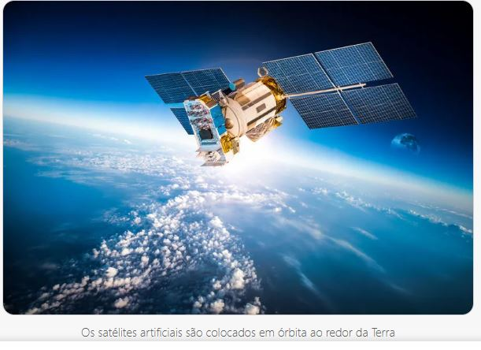

Os satélites artificiais são equipamentos construídos pelo homem que, após serem lançados no espaço,
permanecem em órbita ao redor da Terra. Esses equipamentos tornaram-se fundamentais para uso de
tecnologias na Terra, comunicação e estudos sobre o planeta.

Tipos de satélites
Satélites de comunicação (os mais numerosos);
Satélites de televisão;
Satélites científicos;"
"Satélites meteorológicos;
Satélites de sensoriamento remoto de recursos terrestres;
Satélites de uso militar."
"Isaac Newton e os satélites artificiais
O físico inglês do século XVII Isaac Newton foi quem idealizou a possibilidade do lançamento de objetos que
pudessem permanecer em órbita ao redor da Terra. Ele imaginou que, da mesma forma que a Lua orbita a Terra,
também seria possível fazer com que objetos quaisquer pudessem orbitar nosso planeta.
Se um objeto é lançado horizontalmente do alto de uma montanha, ele descreve uma trajetória curva até tocar
o solo. Aumentando-se a velocidade de lançamento, a distância horizontal percorrida pelo objeto também
aumenta. Newton pensou que, se o objeto fosse lançado em uma determinada velocidade, ele descreveria
uma trajetória circular ao redor de todo o globo terrestre e voltaria ao ponto do lançamento sem tocar no solo.
A equação a seguir determina a mínima velocidade necessária para o lançamento de um satélite artificial.
Para essa equação, G é a constante de gravitação universal (G = 6,7x10– 11 N.m2/Kg2); M é a massa da Terra; e R
é o raio da órbita do satélite."
"Processo de lançamento de um satélite artificial
Os satélites artificiais são levados até a altura desejada a bordo de um ônibus espacial ou acoplados a um foguete.
Ao atingir a altura desejada, o satélite é acelerado até que atinja a velocidade necessária para manter-se em órbita.
Os satélites ocupam posições ao redor da Terra onde não existe atrito com o ar, o que garante que não haja perda de
energia cinética. Com isso, o satélite mantém o movimento por inércia.